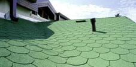

Кровля.
Гибкая черепица Мягкая кровля (однослойная, двухслойная, гибкая битумная черепица). Качества этого материала: водонепроницаемость, высокая прочность, долговечность до 50 лет, легкость кровельных работ и отличный внешний вид, благодаря огромному разнообразию форм, цветов и оттенков. |
МеталлочерепицаПодходит для кровли в различных климатических поясах. Этот материал невосприимчив к резкому перепаду температур, к сильной жаре или крепкому морозу, имитирует натуральную черепицу и предоставляет большие возможности для дизайна, так как отличается большим выбором палитры цветов.
|
Композитная черепицаЭлитная металлочерепица отличается от обычной верхним покрытием из базальтовой каменной крошки, которая придает кровле элегантный дизайн, разнообразие цветовых решений и ряд технических преимуществ, таких как бесшумность, долговечность, снегозадержание. Это очень долговечный материал, срок службы до 100 лет. |
ПрофнастилПредставляет собой профилированные листы металла с полимерным красочным покрытием (или без него), имеющие в сечении трапециевидную форму. Профнастил различаются по форме (синусообразный, трапециевидный, закругленный), высоте гофры (высокий, низкий), ширине профиля и целевому использованию. Существует стеновой профнастил, кровельный профнастил, профнастил для забора. Преимущества профнастила: многообразие форм, долговечность, герметичность и малый вес, экономичность (не требуется частой замены), легкость монтажа кровли, заборов и стен, стойкость к любым погодным условиям, высокие антикоррозийные свойства, высокая транспортабельность, универсальность, экологическая чистота, не требует ухода, эстетический внешний вид (широкая цветовая гамма) Натуральная черепица |
Фальцевая кровляэто один из наиболее прогрессивных видов металлической кровли, обеспечивает полную герметизацию кровли. Скрытая под фальцем система крепления гарантирует отсутствие протечек и не нуждается в сквозных отверстиях. Здесь нет ни резиновых уплотнителей, ни клеевого шва, все скрыто внутри завернутого несколько раз, в ребре, металла. Ребра, образованные системой фальцевания обеспечивают дополнительную жесткость покрытия и направление воды или снега по продольным линиям, исключая боковое стекание или сползание снега. И наконец, кровельные работы можно выполнять на крышах любой сложности. ЕврошиферОбладает рядом преимуществ. Еврошифер не гниет, не ржавеет, выдерживает самые неблагоприятные условия эксплуатации. Выдерживают снеговую нагрузку до 300 кг на м кв. Хорошо поглощает шум. |
Медная кровляСрок службы медной кровли 100-150 лет. За ней не надо ухаживать, но при необходимости медь легко ремонтируется. В течение столь долгой жизни цвет медной кровли меняется: сначала она красновато-желтая, ярко блестящая на солнце, потом появляется благородный бронзово-коричневый цвет, вскоре меняющийся на матово-черный, и, наконец, состарившись (лет через пять), она навсегда становится ярко-зеленой. Окись меди предохраняет металл от воздействия атмосферы лучше любой краски. Получить сразу "итоговый" зеленый цвет можно искусственным патинированием. Рулонная кровляВ основном применяется на промышленных, плоских крышах с малым углом ската. Так же для кровли крыш в многоэтажном строительстве. Монтаж проводиться не сложным путем наплавления гидроизоляции с помощью горелки на подготовленное основание. Обычно это стяжка и праймер. Бывает, что гидроизоляцию укладывают прямо на плотный утеплитель или на влагостойкую фанеру. |